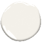
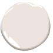
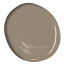

COLOUR TRENDS 2021




Take a look at the colour wheel colours in totality: Warm reds, yellows, and oranges on one side; cool lavenders, blues and greens on the other. Creating a palette within the same half of the wheel tends to be more harmonious. Pairing two colours opposite one another adds a dash of invigorating tension. Which do you prefer?
Key colour wheel terms:
A monochromatic colour scheme uses tints and shades of the same colour.
An analogous colour scheme uses adjacent colours on the colour wheel.
Complementary colour schemes (as in "opposites attract") include two colours that are opposite to each other on the colour wheel.
Selecting the right type of paint finish can enhance paint colour. Top design tips for sheen selection include:
Gloss adds dimension and levity to any room.
Shiny finishes look best on smooth, clean surfaces (spackled, sanded, etc.).
Matte or flat paints are most forgiving of imperfections.
Eggshell offers a perfect middle ground between a matte look and higher-gloss durability, making it a go-to, all-purpose finish perfect for high-traffic areas.
While there is no one-size-fits-all reply to what’s the best interior paint colour, some thoughtful research goes a long way.
Go into this video with an open mind and a commitment to exploring your creative side as you search for your perfect paint colour.